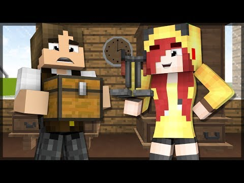
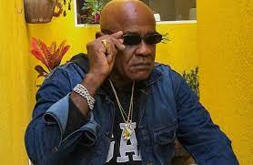
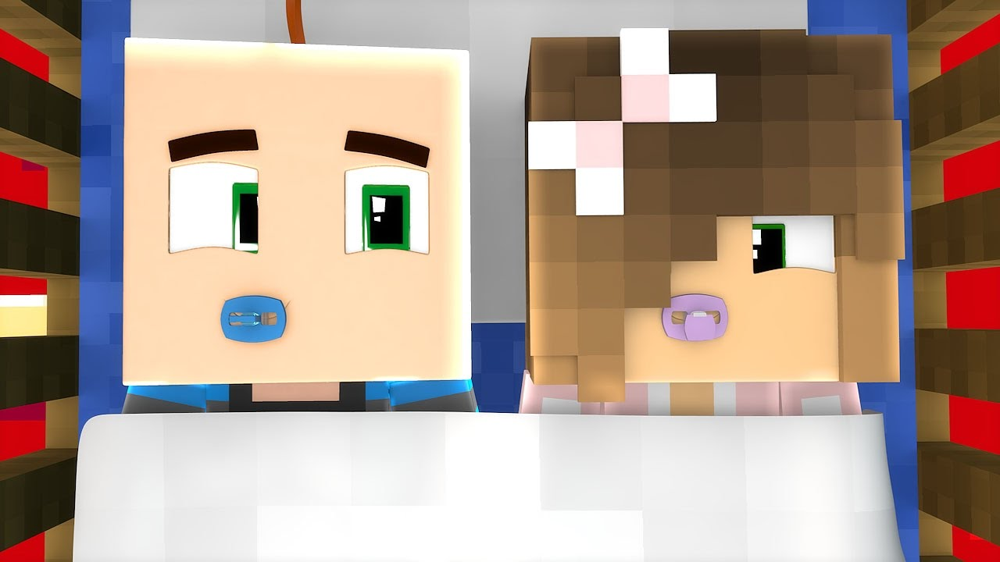

primeiro encontro
Publicado: 11/09/2001

Era um lindo dia no mundo do Minecraft, o sol brilhava no céu e o casal formado pela Kiwi e o Pepo estava ansioso para o seu primeiro encontro. Eles se conheceram em uma partida online e logo descobriram que tinham muito em comum.
Ambos adoravam explorar o mundo virtual, construir casas e enfrentar desafios juntos. E agora, finalmente, estavam frente a frente, prontos para passarem um tempo juntos e se conhecerem melhor.
A Kiwi, com seus cabelos verdes e olhos brilhantes, sorria timidamente para o Pepo, que era um cavaleiro corajoso e habilidoso no jogo. Eles decidiram explorar uma caverna juntos, enfrentando monstros e desvendando mistérios.
Enquanto caminhavam lado a lado, conversavam e riam, descobrindo que tinham uma conexão especial. A Kiwi se sentia protegida ao lado do Pepo, que a defendia dos perigos do mundo virtual.
E assim, o primeiro encontro do casal no Minecraft foi um sucesso. Eles descobriram que juntos eram invencíveis e que o amor pode florescer mesmo em um mundo virtual. E ao final do dia, deram um abraço caloroso e combinaram de se encontrar novamente em breve, em mais uma aventura emocionante.
Leia mais..
Melhor encontro
Publicado: 06/09/2004

Pepo e a linda Kiwi decidiram se encontrar em um cemitério tenebroso, com árvores entortadas e gramados negligenciados. O ambiente estava repleto de uma atmosfera macabra e maldita, criando um clima de medo que deixaria qualquer um arrepiado.
Pepo caminhava lentamente entre as lápides, olhando ao redor com cautela. Ele sabia que a Kiwi adorava aventuras e emoções fortes, então decidiu levá-la para um local que certamente despertaria sua curiosidade.
Quando finalmente avistou a linda Kiwi, vestida de preto e com um sorriso intrigante no rosto, Pepo se aproximou com passos hesitantes. A Kiwi parecia encantada com o ambiente sombrio e assustador que os cercava, e seus olhos brilhavam com uma mistura de medo e fascínio.
Os dois se sentaram em um banco de pedra, sob a luz fraca da lua cheia que iluminava o cemitério. Pepo segurava a mão da Kiwi, tentando transmitir segurança enquanto trocavam histórias sobre fantasmas e espíritos.
A linda Kiwi não conseguia esconder seu entusiasmo, e seu riso ecoava entre os túmulos silenciosos. Pepo olhava para ela com admiração, impressionado com a coragem e a ousadia de sua companheira.
O encontro no cemitério tenebroso foi uma experiência única e inesquecível para Pepo e a linda Kiwi. Eles se sentiram mais próximos do que nunca, compartilhando não apenas o medo, mas também a excitação de enfrentar seus temores juntos.
Leia mais..
20 de Novembro - Dia da Consciência Negra
Publicado: 23/11/2022

No dia 20 de novembro comemora-se o Dia da Consciência Negra. A data foi oficializada por uma lei de 2011 e é inclusive feriado em alguns estados e cidades. Ela foi escolhida para homenagear Zumbi, o líder do Quilombo de Palmares, que morreu nesse dia, em 1695.
Leia mais..
Nossos dois filhos
Publicado: 15/06/2006

O bebê menino poderia ser chamado de Pepinho, em homenagem ao seu pai, Pepo. Ele poderia herdar algumas características distintas de seu pai, como um senso de aventura e curiosidade. Desde tenra idade, Pepinho poderia ser visto explorando os arredores de sua casa no Minecraft, sempre pronto para descobrir novos biomas e segredos escondidos.
Por outro lado, a bebê menina poderia ser chamada de Kiwinha, em honra à sua mãe, Kiwi. Assim como sua mãe, Kiwinha poderia ter uma afinidade com a natureza, amando plantar flores e cultivar jardins coloridos ao redor da casa da família. Ela poderia ser retratada como uma pequena aventureira, acompanhando seu irmão em suas explorações e sempre pronta para ajudar quando necessário.
Leia mais..